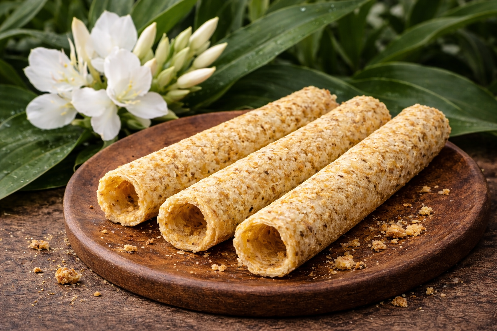

風味描述
前段
淡淡花香先出現，清新不甜膩。
中段
草本氣息拉出層次，口感越嚼越香。
尾韻
收得乾淨，餘香停留但不厚重。
＊ 野薑花屬薑科，但風味不走辛辣薑味路線。
清新花香 × 草本餘韻｜不辛辣、不厚重，適合耐吃型送禮。
淡淡花香先出現，清新不甜膩。
草本氣息拉出層次，口感越嚼越香。
收得乾淨，餘香停留但不厚重。

介紹此口味從採摘到製作完成的過程，傳達天然、新鮮、手工的特色。
我們親自前往採摘新鮮的野薑花，挑選花況良好、香氣自然的花朵，確保原料新鮮純淨。
將採回的野薑花仔細清洗後，經過人工處理與切碎，保留原有清香與細緻口感。
把切碎後的野薑花加入麵粉與蛋捲原料中，細心調配比例，讓花香自然融入麵糊。
以手工方式烘烤與捲製，慢慢做出香酥可口的野薑花蛋捲，讓每一口都吃得到自然與用心。